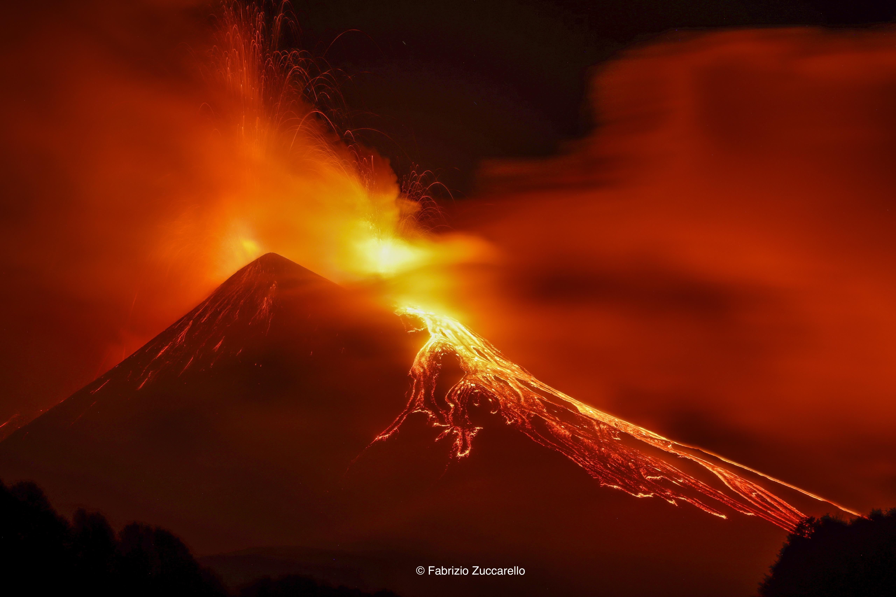

←
←
NEL CUORE DEL MAR MEDITERRANEO, SVETTANDO MAESTOSO SUL PAESAGGIO DELL'ISOLA MAGGIORE ITALIANA SORGE UNO DEI SIMBOLI PIÙ ICONICI DELLA GEOLOGIA MONDIALE
Situato sulla costa orientale della Sicilia, l'Etna è il vulcano attivo più alto d'Europa. È caratterizzato da un'attività frequente, con eruzioni spesso di tipo effusivo, che producono lunghe colate di lava. Queste eruzioni sono generalmente meno esplosive rispetto ad altri vulcani, ma possono causare danni alle aree circostanti. Il territorio intorno è molto fertile grazie ai materiali vulcanici. Inoltre, rappresenta una grande attrazione turistica e naturalistica.
| Stato | 🔴 Attivo |
| Regione | Sicilia |
| Paese | Italia |
| Eruzioni storiche | 200+ |
| Parco naturale | Sì |
